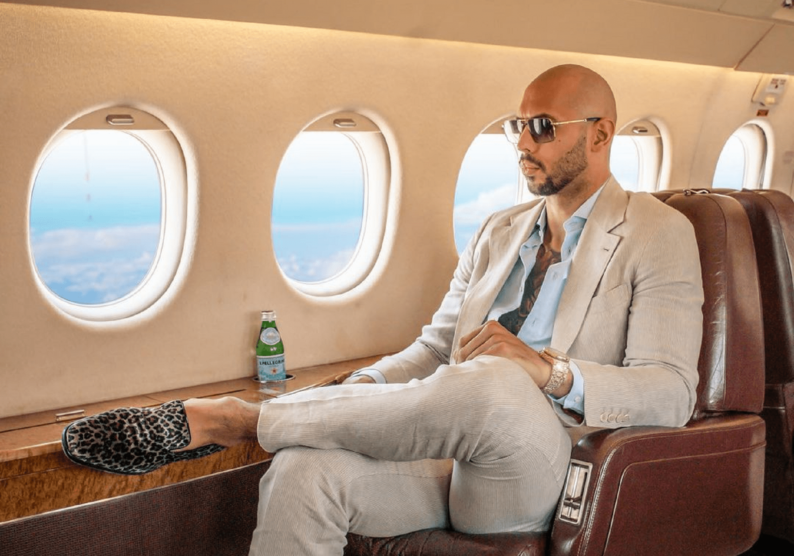
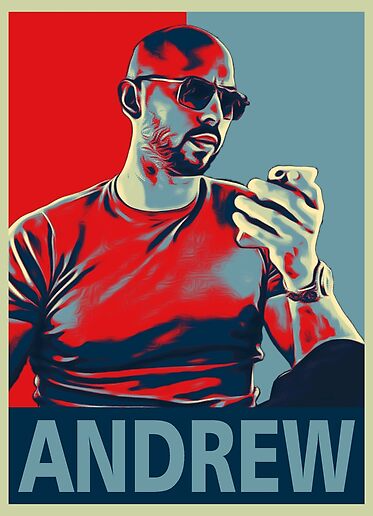

Andrew Tate
“Close your eyes. Focus on making yourself feel excited, powerful. Imagine yourself destroying goals with ease” ― Andrew Tate

Andrew Tate was born on 1 December 1986 in Chicago, USA but after the divorce of the parents, he came to Luton with his mother
Emory Andrew Tate III is a British and American social media personality, businessman, and former professional kickboxer.
Growing up, Tate started kick boxing in 2005 and gained his first championship in 2009
He was the world champion four times and he was very poplar among youth who loved this sport
After leaving kick boxing, he appeared in the TV reality show Big Brother as he was a popular person
He began offering paid courses and memberships through his website and rose to fame as an internet celebrity, promoting an "ultra-masculine, ultra-luxurious lifestyle"

He is 36 years old (as of 2023), he refers to himself as a Beacon of truth. Young individuals look up to him as an idol, he believes in shear hardwork and success many of his opinions are debatable too but looking at the bigger picture he says what he feels there is no counterfeit in his words
Tate's views and statements have generated considerable debate and criticism. He has expressed controversial opinions on topics such as relationships, gender roles, and feminism, often attracting both support and backlash from various online communities.
It's worth noting that while Andrew Tate has gained a certain level of fame and notoriety, his views and statements may not align with mainstream perspectives, and many consider them to be controversial or offensive. As with any public figure, it's important to critically evaluate information and form your own opinions based on a wide range of sources.
Andrew Tate Net Worth 2023 Earnings
Andrew Tate’s main business venture is Hustler University and with the help of this platform, people are getting knowledge about the ways to earn money online. Andrew Tate is an American kickboxer who has a net worth of $700 million as per Andrew Tate. According to the report, about 1 lakh 36 thousand children study with him. A fee of Rs 3600 is charged from the candidate every month.
It is said that apart from this, he has many businesses. But there is no official information about this. Before getting banned by Tiktok, Facebook, Instagram and YouTube, millions of people followed him on social media because of his luxurious lifestyle